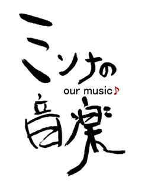

紅華祭に参加します！
Advanced Creatorsは東京工科大学・日本工学院八王子専門学校「第3回 紅華祭」において、以下の複数ステージで音響・照明・企画・模擬店を行います。
- メインステージ企画「ミンナの音楽」
- 軽音楽部・Sound Genesisライブ「ロック魂'07」
- 劇団こねこめにすたん「こねこぶし」
- アカペラサークル赤平「アカピライブ07」
- 模擬店「匠のほっとけーき」
- メインステージ・PAスタッフ参加
メインステージ企画「ミンナの音楽」

今年もアーティストライブの季節がやってきた!!
普段はストリートでしか聞けないあのアーティストが、ここ紅華祭のメインステージから魂のこもった歌声をあなたの心に響かせる!!
| 日時 | 10/7 (日) | 13:00 〜 14:30 |
|---|---|---|
| 10/8 (月祝) | 10:00 〜 11:30 | |
| 会場 | メインステージ | |
出演アーティスト
- jina
-
ピアノやバイオリンの音に合った、繊細な歌声が素敵なシンガーソングライター♪
日時: 10/7 (日) 13:00 〜
- SLADSLAG
-
新メンバーを向かえパワーアップした、ロックでかつポップな音が魅力の男女混合バンド♪
日時: 10/7 (日) 13:45 〜
- アコジィ
-
アコギをジィちゃんになるまで弾こう！というコンセプトをもとに活動している、アコースティックデュオ♪
日時: 10/8 (月祝) 10:00 〜
- バルバロイ
-
こころ惹かれる声や歌詞がかっこいい！静岡出身４人組バンド♪
日時: 10/8 (月祝) 10:45 〜
軽音楽部・Sound Genesisライブ「ロック魂'07」
2日間ブッとおしで繰り広げられるライブ!!
軽音楽部とSound Genesisが演奏し、Advanced Creatorsが音響を担当する合同ライブをみなさん楽しんでください。
| 日時 | 10/7 (日), 8 (月祝) 10:00 〜 |
|---|---|
| 会場 | マクドナルド前 |
出演サークル
劇団こねこめにすたん「こねこぶし」
講実207で行われる、劇団こねこめにすたんの公演の音響と照明を、Advanced Creatorsが担当します。
| 日時 | 10/7 (日) | 11:40 〜、14:20 〜 |
|---|---|---|
| 10/8 (月祝) | 9:30 〜、12:30 〜 | |
| 会場 | 講義実験棟 2階 207教室 | |
出演サークル
アカペラサークル赤平「アカピライブ07」
講A203で行われる、アカペラサークル「赤平」のライブの音響と照明を、Advanced Creatorsが担当します。
| 日時 | 10/7 (日) | 13:00 〜 15:00 |
|---|---|---|
| 10/8 (月祝) | 11:00 〜 13:00 | |
| 会場 | 講義棟A 2階 203教室 | |
出演サークル
模擬店「匠のほっとけーき」
Advanced Creatorsの4年生が、匠の技でホットケーキを作ります。
軽音楽部・Sound Genesisライブ「ロック魂'07」のすぐとなりでお店を出しているので、おなかいっぱいになるまで食べに来てください!!
| 日時 | 10/7 (日), 8 (月祝) 10:00 〜 |
|---|---|
| 会場 | マクドナルド〜講義実験棟間 |
メインステージ・PAスタッフ参加
紅華祭実行委員会が募集したメインステージのPAスタッフに、Advanced Creatorsからも十数名の部員が参加します。
メインステージで行われる様々なライブやイベントの音響をします。
| 日時 | 10/7 (日), 8 (月祝) | 10:00 〜 18:30 |
|---|---|---|
| 会場 | メインステージ | |
- 主催
- 紅華祭実行委員会
- 参加団体
- 紅華祭実行委員会、赤平、Advanced Creators [jina、Sladslag、アコジィ、バルバロイ]、専門学校軽音楽部、ダンシングカンパニー&TECアカデミー、中夜祭実行委員会、エアロビック部、東京工科大学吹奏楽団、祭.com、Stormy Tune、UN-JAMI (出演順)
紅華祭公式サイト
紅華祭について詳しくは紅華祭公式サイトをご覧ください。
- 紅華祭公式サイト「紅華祭Web」